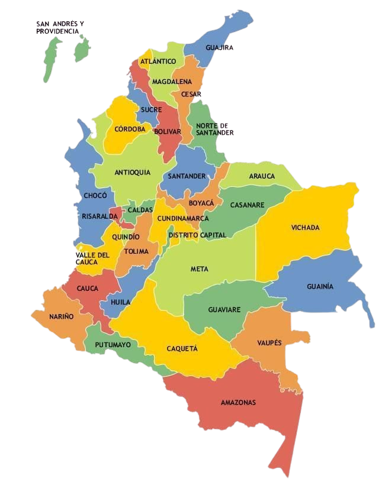

MAPA DE COLOMBIA Y SUS DEPARTAMENTOS
Colombia es un país situado en el noroeste de América del Sur, conocido por su biodiversidad y su geografía variada que incluye montañas andinas, selvas amazónicas y costas en el Caribe y el Pacífico. Su capital es Bogotá, una ciudad ubicada en el altiplano andino. Colombia tiene una rica historia cultural, influenciada por sus raíces indígenas, africanas y europeas, y es famosa por su música, como la cumbia y el vallenato, así como por su café, uno de los más apreciados en el mundo.
